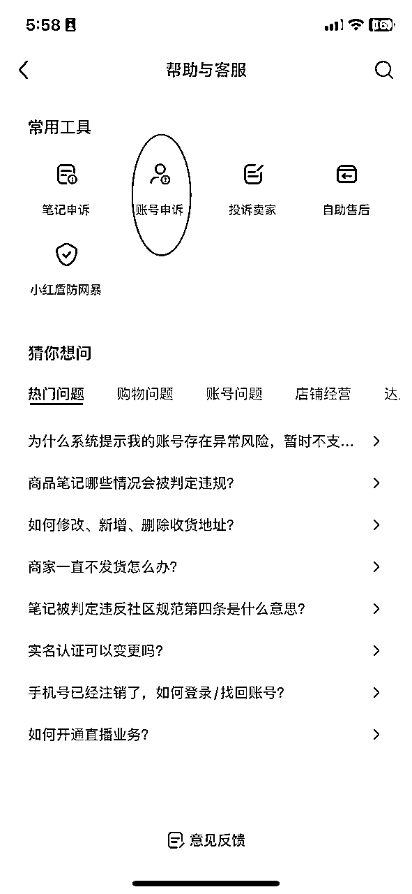
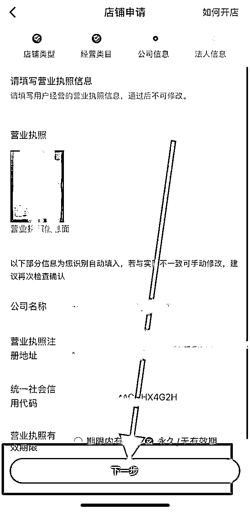
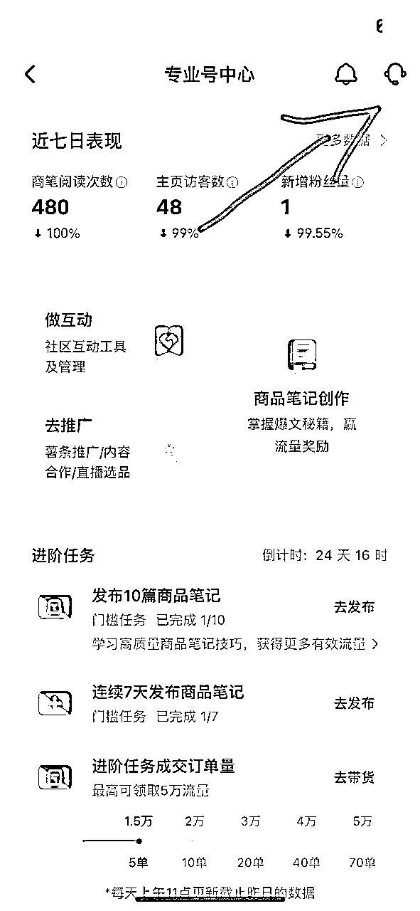

来源：https://nwtzrwy6dsb.feishu.cn/docx/SHp2dGZtLoBQ11x1KaRceprgnOh
自我介绍
先简单的做个自我介绍吧，我叫大龙，因为我是00年出生的，去年7月份，刚从大学毕业。
互相交流学习:15650456725
我是在大二期间开始创业的，做过的行业也挺多的，简单的说一下，就是你从大学想到的项目我基本上都干过，做的比较好的是票务平台，做的是泰安比较大的吧，当时自己认知不够，只知道用h5，公众号，小程序去做，票务平台主要是，售卖一些电影票，旅游景点门票，吃喝玩乐的票，同样在美团买一只电影票，需要35块钱一张（最便宜的）但是在我平台买30块钱两张，我们进价10块钱一张，所以当时在泰安做的比较大的。当时带领15个二级学院的主席一起做这个事情，我还召集了其他学校的同学，通过表白墙，公众号，递推等方式去宣传我的小程序。
因为口罩原因封校，开始做刷量的工作，在大二期间接触了大量的人，所以拿到了京东、滴滴、中国银行等其他不知名软件的校园部负责人的刷量机会。简单来说注册软件一个多少钱这样的，京东我的拿货价是18元一个学生认证，滴滴9元的下载，中国银行的29的下载。整个大一新生我撸了一个遍，还把代理给到兄弟院校。因为我拿货价比较高，他们都从我这走。
大三下学期开始休学在北京创业，做的业务是大学生线上志愿者活动，简单来说因为口罩原因封校，学生无法参加线下的志愿者活动，从而不能加综合测评分，所以我们找到各中字头协会比如中国野生动物保护协会，举办线上志愿者活动，从而让同学们加综合测评分，说到这我相信生财圈友一定有大学生，所以我相信他们一定知道这个线上志愿者活动，估计还有不少参加过，因为我做的全国大学生保护大熊猫活动报名量就到了120万同学报名，这仅仅是我其中的一个活动。
我们的变现方式也相当简单，颁发纸质版证书和纪念奖牌奖品，电子版免费纸质版收费。
底层逻辑是在抖音录制别人直播带货内容，在小红书去直播卖货，懂行的朋友在，做过视频号无人直播的同学可以划走了，因为下面的内容只给纯纯小白看，因为我将从如何注册小红书账号开始讲起。
再开始之前我晒一下我其中一个账号的单天数据吧，目前我们起10个号能跑通8个。这是一天其中的一个号卖的钱，去掉退货，利润在百分之40左右（去掉退款的）所以我觉得是比上班香的。
首先挣钱不要急 按照要求一步步来 不可能一口吃一个胖子 ，仔细看清楚下面的教程，先弄一个账号，一机一卡一号，不要来回切换账号，很容易违规。这个很重要（我有五个号同时在8月份的时候被封）就是因为来回切换账号，新手小白一定要注意，一机一卡一号的意思是，一个手机，只能下载一个小红书，只能登录一个账号，别给我说你有黑科技，能多开小红书号，这我也会，但是请按照我说的来，因为我吃过亏，一个小红书，一个账号，一个手机号，一部手机。首先先做一个号，做成功了在做第二个，第三个号。如果做通了，就可以去转转、咸鱼、找靓机购买，你也不用买很好的。买700左右的二手苹果x就行，苹果手机至少不卡，安卓机确实不好用，暂时不推荐。或者你买个500块钱的二手苹果8p也行。我有十个手机，都是苹果的。或者你去线下通讯城买。你给老板说工作室用的工作机就行，他会给你推荐很多便宜的，切记没有人脸，没有摄像头的不要，因为你要扫人脸实名。
小红书下载成功后，就去注册，注册年龄选择30岁，性别选择女性，你的ID名称你想好后，在小红书搜一下，看看有没有重复的这个很重要，如果重复了申请店铺不过审，为了一次审核通过，去选择一个小红书上没有的名字，这样用户要是搜索你也好找到，对你只有好处没有坏处。
注册完以后别着急给我实名，这个也很重要，先去刷小红书，找自己的对标的账号，去刷，看到喜欢的点点赞，收藏，评论，转发，这个很重要，别人只告诉你这样做，但是没有告诉你为什么，也有很多人忽略做这个，觉得不要紧，但是很重要，因为小红书是有等级的，不信的话，你就打开编辑资料，往下滑，然后有个小红书等级，你必须过了这个等级，这个等级就是尿布薯，这个等级过有四个要求就是上面说的四个，如果你想快速启动账号，下面说的一定要记住，找图文笔记，笔记内容写，30岁了，快劝我不要生二胎，用醒图创建一个白底图，把字打上去，然后设置好看的字体，和样式，控制好行间距字间距，就可以了。发布笔记记得带话题，话题带#该不该要二胎#二胎##生孩子，当笔记发发完，将有至少有一千个女性用户，给你评论，这样你又收获点赞，收获评论，收获粉丝，还有收获浏览量，这就是账号启动的关键所在。粉丝群体是女性，购买力超强的。只有试过的才知道，这招多牛逼。
当你发了笔记后小眼睛也就是观看量突破1000，正常这样的爆文笔记在5000左右，你就可以实名了，记住一个人，只能实名一个账号。如果你想多开账号，就去联系你的朋友同学，爹妈，他们的你负责注册小红书，注册手机号，然后找他们实名。
当你实名完以后，就可以开店铺，如果新人小白我将建议你注册个人号，小红书是这样的他分，个人号，个体号，还有专业号，企业号。
个人号只需要一张身份证就可以注册，个体号，顾名思义他需要有个体工商户营业执照。才能注册，专业号，是在有个体工商户前提下，教600块钱，然后可以在开通三个子账号，也就是主账号，开通店铺，三个子账号，可以卖主账号的商品。企业号，需要交2万保证金。
完事以后按照下方操作给我申诉，申诉结果要是正常，再开店铺

打开小红书进入到（我） - 右上角三条杠 - 创作中心 - 更多服务 - 开通店铺 - 立即开店 - 选择个人店-选电商商品，类目打算做那个就选哪个；(注：百货的家用清洁品里面驱蚊用品和除螨抑菌用品需要资质选的时候先剔除）-把身份证信息全部填写完提交就可以了。
注:(一个实名只能开一家个人店)


在手机申请完之后操作流程：全部做完就可以。
打开小红书进入到（我） - 右上角三条杠 - 创作中心 - 更多服务 - 开通店铺 - 立即开店 - 选择个体工商户后点击下一步 - 选电商商品，类目能选的都选上；（注：百货的家用清洁品里面驱蚊用品和除螨抑菌用品需要资质选的时候先剔除）后下一步 - 把营业执照的上传信息会自动填写 - 最后把法人信息填写好直接提交就可以了（法人信息就是开通营业执照的实名信息）。
注：一个营业执照只能开通两个专业号及对应的两个店铺。



如果你想升级为专业号，下面是步骤
专业号电脑端操作步骤：
个体户店铺得升级成蓝V号（也就是企业号），去到专业号中心-更多功能-账号关联-主理人账号关联-邀请-输入已经开通好个人专业号账号的小红书号邀请并同意就可以了
时间基本上当天就能给你通过了，最迟第二天。
小红书成功开通后，就可以找商品了，我一般做的就是服装类目，目前小红书无人直播，最好做的也就是服装类目，最容易拿到结果。
开通后先去找商品，如果你找好一个品，就去1688，抖音，拼多多，找商家聊，尽量把自己的单子给说的多一点，跟他说每天能稳定一百到三百单，通过加上他的微信，跟他聊价格，聊售后，售后一定要他们来负责，通过店管家来代发，一定要提前把售后说清楚。去问问他有没有店管家或者聚水潭。把发货地址和退货地址要到以后，就可以操作了，
在这里新建地址时一定注意，他有默认地址，发货地址现在管得松对无货源可以写自己的地址，为了安全起见，我建议还是填写商家地址，退货地址有多地址退货按钮，看到了在画红色圈的左边，点击进去可以把商品放上，然后把自己的地址放上，就可以了。
1、地址库管理：
2、物流模板：
物流模板就是你先找商家要到商品的地址 然后再添加就行，输入姓名：填写商品+平台(目的是让自己明白不弄错发货厂家)地址位置需要输入街道，这个也挺重要，商家一般不告诉你街道，你去百度搜就行，我有一次街道弄错了，就很麻烦，导致用户一直没有收到，退款了。
3、运费模板：
运费模板这我一般是选择非偏远地区发货，目前来说偏远地区发货都需要额外加运费，我有些用户非要要的话，你在额外让他付钱就行，有很多新疆用户宁愿多花15块钱也要买，所以你要成全他，他还会给你店铺好评，你也可以在商品上架前问商家，哪些地方发不了，哪些需要加钱，然后再根据自己的需要自定义就行了，正常来说非偏远地区有新疆西藏乌鲁木齐海南，根据自己的需要酌情添加就行
拓展：店铺可以设置多地址退货，每一个单独的商品都可以单独设置退货地址，有出单的就可以找上家要退货地址，可以减轻售后负担。
设置完这些，我就可以教你如果使用工具上架商品到，小红书了，其实手动上架也行，就是非常麻烦。我将告诉你如何上架更方便，提高工作效率
网址：
http://xhs.gege5.cn/zkXiaoHongShuZhaoCaiMao/copy
招财猫上品教程：
复制网址在浏览器打开 - 登录店铺 - 设置好需要填写的信息。
我一般主要用招财猫上架商品，因为他非常的稳定，注意的是需要，我给你说一下，图片不是很清晰，商品品牌位置不要写，我们卖的货都是没有品牌的这样少了有诉讼，或者举报，运费模板我们刚才已经设置过了，所以直接选择非偏远地区不包邮，物流方案我们刚才也设置过了，谁家的商品，这里就写谁家的地址。发货时间我一般会写48小时发货，是否支持7天无理由，我一般写支持。标题的位置不用写，库存的位置注意，我一般会写10000，因为我吃过亏，自己卖的很好，但是库存没设置好，导致没有货了，我自己还不知道，导致用户想买都没法买，所以少赚了很多钱，价格的位置有很多细节点，你如果在小红书进货不需要改价格100%，如果如果你是拼多多，或者1688记得要乘以2，乘以3，要不卖半天发现自己卖的价格和买的价格一样，自己白干，我就吃过这样的亏，上架前一定要设置好价格。别白干了。图片设置、sku设置、条形码设置、商品属性自定义、这些都不用管，千万别乱动。
价格记得设置，记得要去翻倍！！！具体多少看客单价，比如进价5块的，那就多翻点，卖15块，价格高的，那就少翻倍一点，比如进价88的，卖148。（价格也可以看同行的售价，同行怎么样卖得好我们就跟价卖)。
找到同款链接复制下来填写到这个框框里面-点击第一步（搜索）-搜索出来后点击复制-等待审核通过到店铺直接上架产品即可。

如果你把商品链接放上去，显示错误，那么是你的浏览器的问题，换一个浏览器就行了，我一般是用谷歌浏览器，记住多个小红书账号在浏览器上也不要随意的乱换，有方法的，点击谷歌浏览图像，点击添加，然后无限生成子账号了。记住浏览器端也是一个小红书账号，一个子账号。谷歌浏览器目前来说是最好用的最清爽的一个
首先说明一下，为什么会多介绍几个插件呢，是因为目前插件不稳定，这个上架不了，可以试试另外一个，多多试试，总有一个可以用的
小红书店铺端，必须开通店铺后才能登录，在小红书店铺主页下面有个服务点击服务，点击前往服务市场，然后就能看到众多插件，找到妙手商品上架，
点击前往获取-点击商品上货-在商货前请先设置商品设置，第一个是上架设置、商品、品牌，，商品类目选择手动设置，品牌设置选择空，如果必须选择品牌默认第一个品牌，货号设置设置为空，价格设置，这个价格七绝你想赚多少，我一般是设置乘以200%，也就是说我挣一半，市场价格必须要设置，因为市场价格需要高于售卖价格才能上架
设置好以后设置运费模板，选择非偏远地区包邮，物流模板设置发货地址，是否预售，这个要注意，不能选择预售，选择非预售，然后选择48小时发货，设置完以后点击保存就可以上架商品了
在小红书找到低分爆款-截图-打开拼多多-右上角识图打开-点击刚截好的图-选一个价格合适的直接复制链接粘贴到商品软件就可以了。
还有就是在1688 找商品，右上角有个转发的按键，然后复制链接即可
我将演示一下如何用拼多多获取商品链接
首先打开拼多多，点击左上方有个拍照的图标，点击你截图的商品，放上去，然后就能找到商品，然后找到商品销量比较好，然后评价比较多的商品，然后进行复制即可。
我在演示一下如果用1688 上品，1688是一个工厂集散地，商品都可以在上面找到。点击1688，点击右上角有个放大镜片，有个一键识图，然后就可以找到对应的商品，这里面有个细节，一定要注意就是找商家，别找二道贩子，要找源头厂家，这样有保证，如何识别什么样的是源头厂家，看看有没有一个牛头标志，这样有牛头标志的基本上是源头厂家。
淘宝和抖音操作其实和拼多多1688很像我就不演示了。
按步骤排查，处理完毕之后（提交商品）。
首先打开小红书千帆，然后点击商品，然后找到商品，然后点击编辑，根据编辑信息提示，我简单说一下吧，首先就是的类目不正确，有些类目你是没有的，需要在店铺设置里面，找到类目申请，点击申请类目，点击你要申请的类目，一般审核周期比较长，需要2-3个工作日，所以需要在申请前多申请一些。我就吃过亏，找到一个品申请一个类目，很费时间。还有个问题是你的图文不能有淘宝、抖音、1688，拼多多的字样，还有个问题是图片不能有白边，这些按照他的提示删除就行，完事以后提交商品，等待审核，审核通过后会通知你，你就在上架商品就行
上货的我讲完了，我讲一下如何发货，发货软件功能基本一样，选一个使用即可。（店管家的话是跟上家合作的，建议有一定的单量再去谈合作）。
wecw.18jingtun.com/register?type=weChat&code=MTY2NDU5MTk5NTM2NzY1MzM3Ng==
上面是需要用到的链接下面是操作步骤
点击链接然后下载下来，然后去注册，下之前一定要删除杀毒软件，安装的时候要按照在d盘，注册填写自己的手机号，在刚注册账号需要设置，点击代发设置，往下滑有个用户设置，这个是必须要设置的，请一定按照步骤操作
采购方式选择平台号采购，虚拟号下单设置，可开可不开，我给你说一下目的是，开的话需要三毛钱，不开的话拼多多可能会给用户发短信。
自动关联设置点击打开，采购单支付确认设置，点开，系统自动解密一定要打开，要不看不到用户信息。采购单自动修改地址，下家地址发生变更打开，自动采购备注打开，系统自动发货打开系统自动发送物流短信打开
接下来就是店铺授权了，点击代发设置，点击店铺授权，点击绑定新店铺，然后授权成功，把没有关联商品的关联给拼多多，如何下单，关联后，点击支付宝右上角有个支付宝图标，点击全部店铺，点击开启支付，等待半分钟，填写支付宝短信验证码即可支付成功，需要注意的是，不要用银行卡支付，也不能用信用卡支付，需要用余额支付，这样不容易封控从而无法下单。
首先登录小红书千帆PC端：
https://ark.xiaohongshu.com/app-system/home
在首页点击服务市场再点击前往服务市场，然后往下翻，找到逸淘，如果找不到，可以搜索，点击获取，然后点击授权店铺登录，这有个注意点，是需要下载插件，找到相应浏览器对应的插件，然后下载，然后打开后解压，解压到d盘比较好，点击谷歌浏览器，点击设置，点击扩展小程序，点击加载小程序，点击然后拖进来，记得把开发者模式打开，点击浏览器的左上角图标，然后有个扩展小程序，记得打开，这个妙手和招财猫也容易出现下载对应的插件就可以了。回到逸淘页面，点击店铺号登录，点击右上角的逸淘选择店铺号登录，改成待关联模式，点击关联宝贝，输入商品链接，一定对应好sku这个我吃过亏，要不用户买了，发现没有货了，然后点击立即下单，然后下单就行。用户设置的位置，下单设置，买家手机号后四位，选择修改手机号中间四位，这里随便填写四个数字，我一般写5571，你自己看着来就行，拼多多设置同刚刚，这个操作的目的就是为了避免短信发给用户。当出单后单号出来直接自动点击发货就行
选择付款方式然后付款
店管家发货链接：
https://fxali.dgjapp.com/Common/Page/NewOrder-AllOrder?token=1EEBB65D9257D44D024BBA62AB1806C3&dbname=wdJM8OZZiF60rm73/6ttwFVGdjmsCc3W
首先打开我上面的链接：点击分发代发erp，点击立即使用点击注册账号，输入手机号，验证码，密码，然后登录，首先是绑定自己的的小红书店铺，记得小红书也在相同的浏览器打开哟，然后找厂家要绑定的账号，点击添加店铺，点击授权登录，商品管理把自营商品，改成厂家商品，然后把商品绑定厂家，店家厂家发货，绑定好之后，再把商品绑定一下，然后点击订单管理，点击同步订单，厂家那边就能看到货了
跟厂家谈单的话术：
尽量把自己的单子给说的多一点，跟他说每天能稳定一百到三百单，通过加上他的微信，跟他聊价格，聊售后，售后一定要他们来负责，通过店管家来代发，一定要提前把售后说清楚。
我为什么介绍这么多方法，目的就是让大家多会几个，因为这些都不稳定，随时可能会崩溃，遇到问题，及时换软件就行，因为这上面我吃过亏，有些软件就是崩溃了，很搞心态，所以多了解几个有备无患
如果只是零星的几单 就没有必要去操作上面的软件了，小红书有解密额度，直接解密就可以了。获取用户信息后，直接把信息给厂家，或者你自己在1688拍单，发货就行了。
你说这些东西我们怎么知道的，就是学习，其次就是问客服，客服啥都知道，不断骚扰他就行，你像抖音，快手，视频号的客服联系不上，但是小红书的客服联系非常方便，立马就能联系上。

我给你讲一下什么情况才需要用到这一步呢，就是这个小红书直播也好，还是小红书混剪也好很容易违规，就是没有流量，那么就需要你把店铺关了，从新注册账号，这里有个步骤很重要就是注销完账号以后，需要刷机，刷机以后，你在注册账号就是一个全新的账号了，你在使用就是一个新的账号了，如果你不刷机，注册账号，还是老账户，如何看出来的，就是在编辑资料看自己的等级的时候，还是有天数的，这样系统识别出你是原来的账号，照样不给你流量这就是血的教训啊。
店铺关店：
账号注销：
如何开通个人店铺
打开小红书进入到（我） - 右上角三条杠 - 创作中心 - 更多服务 - 开通店铺 - 立即开店 - 选择个人店-选电商商品，（把服饰鞋包类目全部选上）
-把身份证信息全部填写完提交就可以了。


obs下载下来：记得把杀毒软件卸载掉（这个很重要要不下来使用不了）
https://www.onlinedown.net/soft/637537.htm
小红书直播助手下下来：
https://www.xiaohongshu.com/zhibo/login
江湖工具箱（这个也是必须把杀毒软件卸载掉，要不下载不了使用不了）
http://jianghudata.com/
选品方式
你想快速拿到结果就是站内截流，就是刷同行直播间，刷着刷着就能找到可以快速出单的品，我做小红书混剪找品一样，你就看他直播间，有没有发笔记，粉丝在300以内的，并且销量很高的，就是可以拿来测试的，我一般测试三个号三个素材，如果出单就说明可以放大了。我一般是凌晨12点的时候就开始刷小红书直播间同行

看到了吗这样的品卖了300单，才100个粉丝，这种就可以直接搬运。
直接在吧图片保存下来，然后抖音有个一键识别图片，然后就能找到相应的直播间，如果还是没有找到，那就去搜索这个商品名称，在抖音找直播间，一定要记得货对版，这个很重要。
还有一种方式就是在蝉妈妈找蝉小红，找前100的直播间，看看他们是否有无人带货，有的话，直接抄，这个是最简单的方式。
还有一种方式就是用考古家。新人不建议使用这个方法，因为你没有选品的感觉。但这个是可以出大爆款的，因为没有人做，核心思路就是你找抖音很爆，但是小红书没有的品。并且粉丝画像年龄在30岁左右，并且是百分之80是女性的。
最后就是你找到抖音卖的好的直播间，直接录制，录制工具在上方，然后在小红书直播。
小红书直播其实现在是红利期，所以新人可以快速在这上面挣到钱。但是有很多问题，需要说一下，首先是目前能做出结果的是服装，他的退货率在百分之30左右，我这边运营的比较好，退货率也在百分之15左右，所以退货是一个问题，不管是做混剪也好，做直播也好，服装的退货率都高。第二个问题，是容易废号，本身就是逃避规则的事情，所以容易违规，目前来说废号是加长便饭，但是要记住，账号是你赚钱的工具，只要你的roi是正比的就行，多找号就行了。